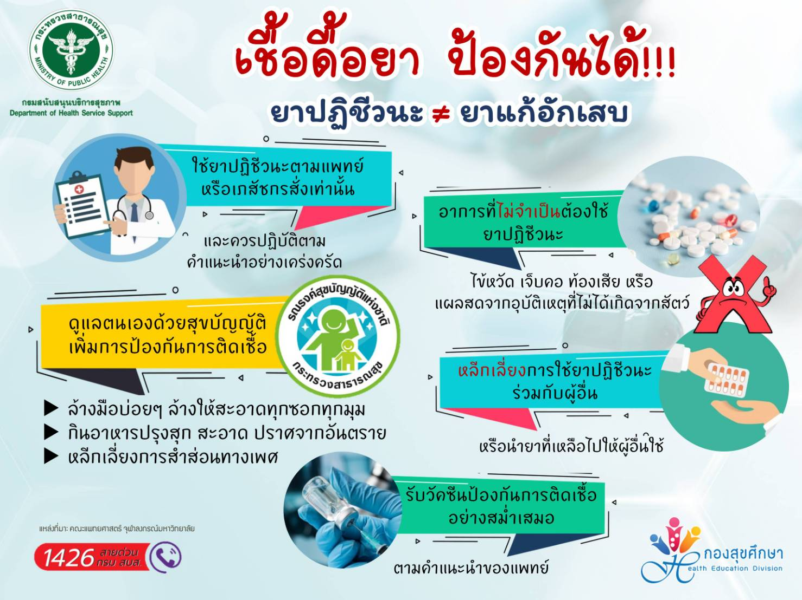
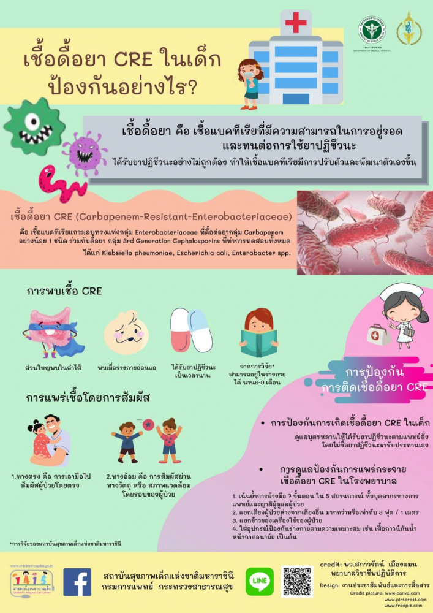

 |
การป้องกันเชื้อดื้อยาไม่รับประทานยาปฏิชีวนะพร่ำเพรื่อ รับประทานยาตามแผนการรักษาของแพทย์อย่างเคร่งครัด ล้างมือบ่อย ๆ เพราะเชื้อดื้อยามักบนผิวหนัง การล้างมือบ่อย ๆ สามารถลดการแพร่กระจายเชื้อผ่านการสัมผัสได้ แยกห้องผู้ป่วยที่มีการติดเชื้อดื้อยาออกจากผู้ป่วยรายอื่น ล้างมือด้วยแอลกอฮอล์ก่อนและหลังสัมผัสผู้ป่วยที่ติดเชื้อดื้อยา แยกข้าวของเครื่องใช้ของผู้ที่ติดเชื้อดื้อยา เพื่อลดการแพร่กระจายเชื้อ ทำความสะอาดพื้นผิว และสิ่งแวดล้อม รวมไปถึงอุปกรณ์การแพทย์ต่าง ๆ ด้วยที่มีประสิทธิภาพการฆ่าเชื้ออย่างเหมาะสม เช่น ไฮโดรเจนเพอร์ออกไซด์ (hydrogen peroxide) แอลกอฮอล์ 70% |
|  | การป้องกันการเกิดเชื้อดื้อยา CRE ในเด็ก
|